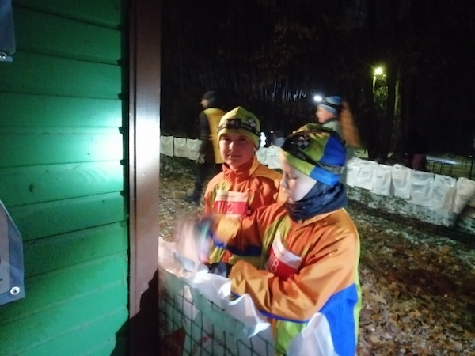
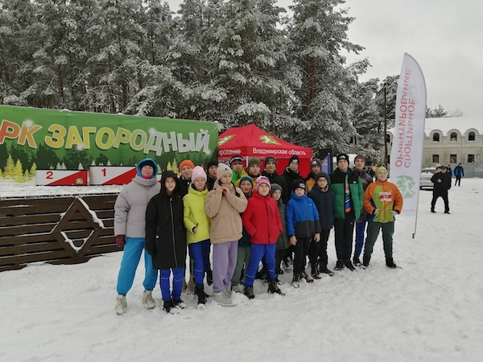

27 октября
Наша команда "Шахматы на бегу" отправилась на Всероссийские
соревнования по
спортивному ориентированию "Владимиро-Суздальская Русь", которые продлятся 3 дня! Владимир нас встретил
первым
снегопадом. Пришла настоящая зима. Сегодня дисциплина "кросс-спринт" (в темное время суток). Хотя дистанция
и
была скоростная, погодные условия усложняли её прохождение. Но не смотря ни на что, наши ребята смогли
успешно с
ней справиться.


28 октября
Конкуренция на соревнованиях "Владимиро-Суздальская Русь" очень
большая. По
каждой возрастной группе за победу борется более 100 сильнейших участников. Вчера был "Кросс-спринт",
сегодня "Кросс-классика". Итоги за два дня:
Ж12 Паньшина Лера - 56, сегодня 60
Ж14 Смирнова Анастасия - 38, сегодня 10
Ж14 Попова Софья - вчера не получилось, сегодня 83
Ж16 Шапошникова Дарья - 58, сегодня 48
М12 Семенов Игорь - 83, сегодня 76
М12 Ипатов Денис - вчера не получилось, сегодня 99
М12 Мохов Матвей - 76, сегодня 102
М12 Нечаев Максим - вчера не получилось, сегодня 120
М14 Смирнов Владимир - 61, сегодня не получилось
М14 Торопынин Тимофей - 60, сегодня 95
М14 Якобчук Роман - 49, сегодня 81
М14 Баринов Егор - 111, сегодня 84
М14 Тренов Александр - вчера не получилось, сегодня 96
М14 Кудашев Сергей - 83, сегодня 39
М14 Набатов Семён - 103, сегодня 63
М16 Жучков Иван - 70, сегодня 67
Увы, не вышло удачно закончить дистанцию у Кабанова Егора и Корнилова Антона. Впереди ещё старты! Всем
успеха!
29 октября
Заключительный день "Владимиро-Суздальская Русь" как и всегда,
сопровождался дисциплиной "Кросс-многодневный". Стартовали в обратном порядке. У кого результаты были похуже
стартовали первыми, а лидеры последними. Иногда это сказывалось на психологическом состоянии - настрое. Но
ничего, надо побольше интересных стартов. Поэтому несмотря на некоторые сложности, день оставил
положительные эмоции!
Итоги за 3 день и по итогам многодневки:
Ж12 Паньшина Лера - 74, в итоге 67
Ж14 Смирнова Анастасия - 27, в итоге 12
Ж14 Попова Софья - 90, в итоге 84
Ж16 Шапошникова Дарья - 47, в итоге 46
М12 Семенов Игорь 78, в итоге 73
М12 Ипатов Денис - 116, в итоге 105
М12 Мохов Матвей - 119, в итоге 108
М12 Нечаев Максим, - 94, в итоге 104
М14 Смирнов Владимир - 125, в итоге 125
М14 Торопынин Тимофей - 81, в итоге 89
М14 Якобчук Роман - 67, в итоге 75
М14 Баринов Егор - 79, в итоге 78
М14 Тренов Александр - 110, в итоге 99
М14 Кудашев Сергей - 44, в итоге 36
М14 Набатов Семён - 103, в итоге 86
М14 Кабанов Егор - 124, в итоге 127
М14 Корнилов Антон - 114, в итоге 121
М16 Жучков Иван - не получилось, в итоге 78
